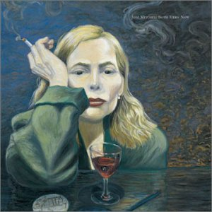

Both sides, now-Hayley Westenra翻唱1969年Joni Mitchell的版本。

Rows and flows of angel hair
And ice cream castles in the air
And feather canyons everywhere
I've looked at clouds that way
But now they only block the sun
They rain and snow on everyone
So many things I would have done
Clouds got in my way
I've looked at clouds from both sides now
From up and down, and still somehow
It's cloud's illusions I recall
I really don't know clouds at all
Moons and Junes and Ferris wheels
The dizzy dancing way you feel
As every fairy tale comes real
I've looked at love that way
But now it's just another show
You leave 'em laughing when you go
And if you care, don't let them know
Don't give yourself away
I've looked at love from both sides now
From give and take, and still somehow
It's love's illusions I recall
I really don't know love at all
Tears and fears and feeling proud
To say "I love you" right out loud
Dreams and schemes and circus crowds
I've looked at life that way
But now old friends they're acting strange
They shake their heads, they say I've changed
Well something's lost but something's gained
In living every day
I've looked at life from both sides now
From win and lose and still somehow
It's life's illusions I recall
I really don't know life at all
17 Responses to “Both sides, now”
2011-11-27
你推荐的歌都挺好听，我的首页音乐一直是很久以前你推荐的Garden state的一首let go
2011-11-28
Hayley’s voice is beautiful. But I guess you may want to check out another version, by Joni herself, after 30 years. Her voice becomes so deep and mature, fits this song perfectly.
http://www.youtube.com/watch?v=tKQSlH-LLTQ
2011-11-28
youtube国内上不了…..据说Joni Mitchell几十年后的“咽嗓”比当年的声音演绎这首歌更有味道~
2011-11-28
可以考虑翻墙看，呵呵
2011-12-05
好听，赞
2011-12-06
忙得有日子没更新了~~~
2011-12-11
给你发的xiami的链接就是Joni本人重新唱的版本，没注意？
2011-12-21
博主，最近还好吧。好久没更新。希望你是度假去了。
2011-12-24
楼主quit了
2011-12-24
这个征友的链接是博主吗？
http://www.jiaoyou8.com/friends_info?action=user_info&login_id=幸福在转弯处
http://www.jiaoyou8.com/friends_info?action=user_pic&login_id=%d0%d2%b8%a3%d4%da%d7%aa%cd%e4%b4%a6&pic_id=1249588
2011-12-25
Wish you all a very Merry Christmas and a Happy New Year!
2011-12-26
各位，节日快乐！
年底工作忙，所以没有更新，谢谢你们关心。
SOMEONE，我从未在任何网站上进行”交友“注册，如果看到用我的照片进行交友的网站，那一定是骗子所为。
2011-12-26
都想你了，茶，不忙时更新一下啊
2011-12-29
兄弟你好！我对你的网站域名很感兴趣！不知道你有意要出售吗？价格好商量！等待你的回复
2011-12-30
Like your blog
2011-12-30
博主的博客很简洁、清爽哦，第一次来博主的博客，支持一个了！
2012-01-07
好像真的关博了， 呵呵， 一定是有新的男朋友了吧。
Leave A Reply
存档只读，评论已关闭。